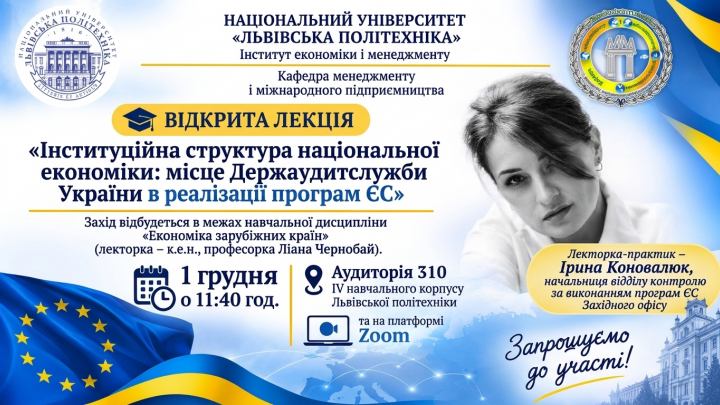
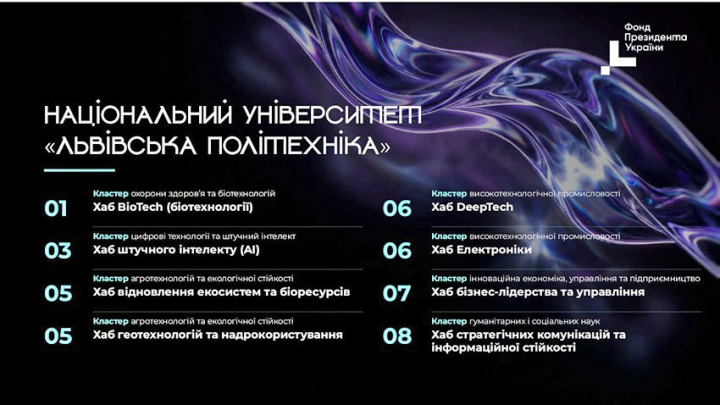
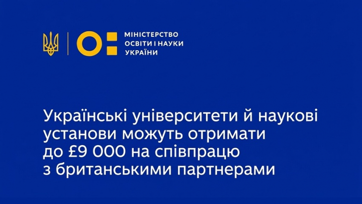
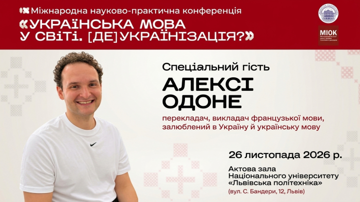

У Львівській політехніці презентували проєкт «Мапа хабів талантів України»
Підготовчі курси
З ректорського столу
Політехніки - для перемоги
Книга пам'яті
Новини університету
24 листоп. 2026, 15:18
Ярмарок кар’єри 2026: підсумки, враження та нові можливості
24 листоп. 2026, 15:02
У Львівській політехніці відбудеться міжнародний науково-практичний семінар до 170-річчя від дня народження Софії Русової
24 листоп. 2026, 13:45
Професорці Надії Зелінській вручено відзнаку «Михайло Грушевський. Наука і журналістика»
24 листоп. 2026, 12:01
Успішна випускниця кафедри ОА Любов Данилів про гроші, міфи та реальне майбутнє професії
24 листоп. 2026, 11:28
Запрошуємо до участі у віртуальному квесті місцями пам’яти Голодоморів у Львові

24 листоп. 2026, 10:19
Кафедра ММП запрошує студентів та всіх охочих на відкриту лекцію на тему «Інституційна структура національної економіки: місце Держслужби України в реалізації програм ЄС»
24 листоп. 2026, 09:35
МІОК долучився до напрацювання стратегічних рекомендацій щодо ролі української діаспори у відновленні України

23 листоп. 2026, 17:19
Дванадцять хабів талантів у Львові: як Україна розвиває мережу освіти та науки для молоді

23 листоп. 2026, 15:55
Українські університети й наукові установи можуть отримати до £9 000 на співпрацю з британськими партнерами

23 листоп. 2026, 15:40
Bonjour, мово! Молодий француз, який закохався в українську. Зустріч з Алексі Одоне
23 листоп. 2026, 14:15
У Львівській політехніці відбулися Всеукраїнські змагання Deineko Geo Cup 2026
23 листоп. 2026, 13:20
25 молодих вчених стали переможцями конкурсу на стипендії імені Героїв Небесної Сотні, серед них — представники Львівської політехніки


.jpg)